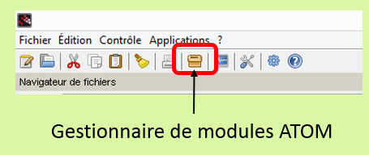
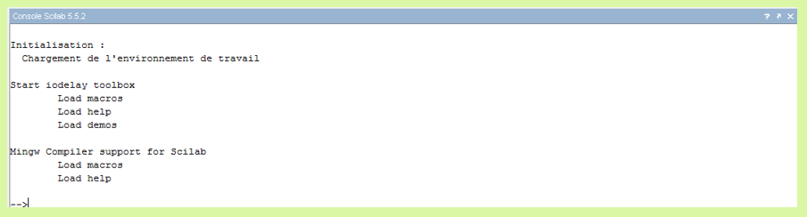
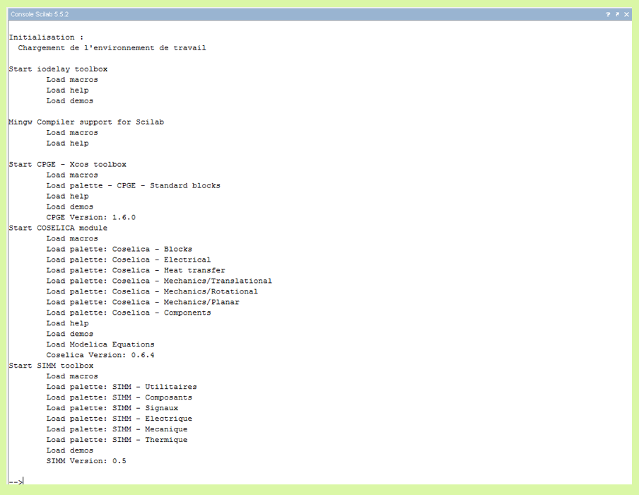

La version de Scilab que nous utiliserons est scilab-5.2.2.
Scilab est un logiciel de calcul numérique, c’est-à-dire qu’il permet d’effectuer des calculs sur des valeurs approchées réelles ou complexes. Ce logiciel peut se voir comme une « calculatrice améliorée » spécialisée qui possède des bibliothèques de fonctions prédéfinies, d’importantes capacités de représentation graphique de données, pouvant faire l’objet d’une programmation. Nous utiliserons Xcos qui regroupe des outils appropriés à nos démarches d'ingénierie au travers de modèles prédififis.
Scilab est un logiciel libre gratuit, téléchargeable à http://www.scilab.org, disponible sur toutes les plateformes usuelles (Windows, Mac, Linux), qui a initialement été développé par des chercheurs de l’INRIA et de l’ENPC.
Scilab est le logiciel de calcul numérique, Xcos est l'extension que nous utiliserons pour modéliser les chaines d'énergie des systèmes. Tout d'abord, vous devez installer SCILAB et ensuite les modules qui permettront l'usage des bibliothèques dans Xcos.
Les préconisations sont les suivantes:


